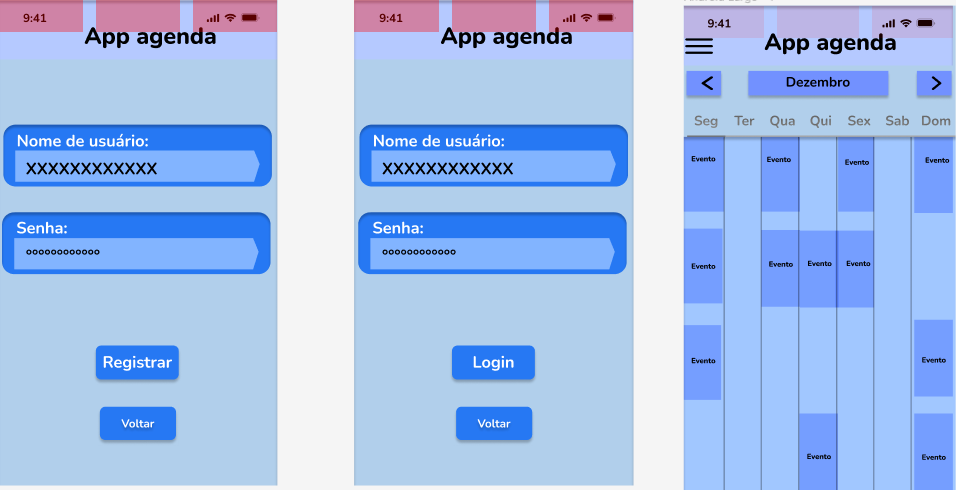
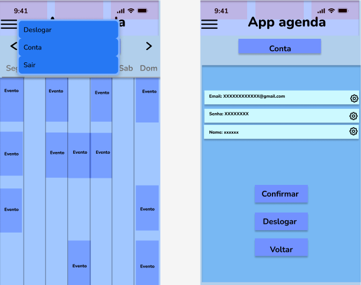
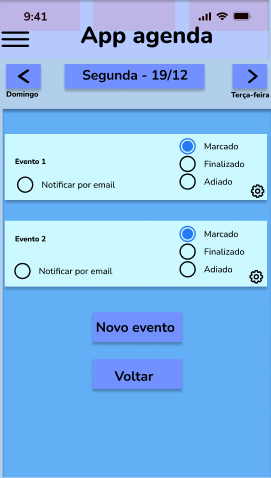
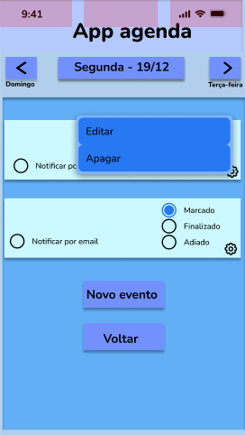
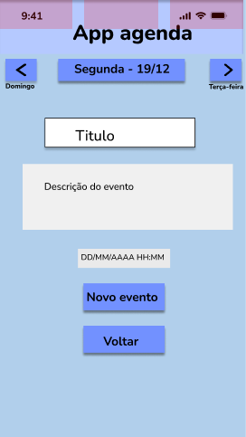

Next
Fluxo de telas
Previous
System Metaphor
User Interface
Registro, Login e Homepage

Botão superior esquerdo e visualizar conta

Visualizar dia

Menu evento criado

Menu de criação de evento

Next
Fluxo de telas
Previous
System Metaphor